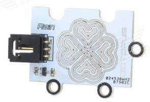
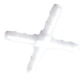

System developed for automatic watering of plants.
Every plant needs different rate of watering and soil humidity, e.g. Cyperus needs a lot of water, the swamp is ideal. Contrary Zamioculcas likes small amount of water in shady places, and dry soil. Simple drop waterer or water dispenser can not do this. One can solve some problems by self watering pots, but they have mostly limited water volume.
Similar projects (other exists): Parrot Flower Power, Edyn, OpenSprinkler.
These projects are either expensive (the project was aimed in the beginning for 14 power pots, every one with different plant), or not suitable to my needs. Probably there exists at least one suitable and cheap enough project in the world, but I couldn't find it in 2013 and it was fun to develop it. And... it is not finished, never will be, so I have something to do till my end of life.
Compare this to the OpenSprinkler (145 euro for DIY version and zone expander), which can not water pot by soil humidity. Anyway I owe a lot of inspiration and learned code to the OpenSprinkler and OpenSprinklerPi.
The watering system is built in such way that: there is one water source (e.g. barrel of water, or water tap). A pump is used to pump water from water source. Water is leaded by tubes into several valves. From valves water is leaded to the plant pots. Control software always open only one valve, so it can direct water from water source to the desired plant pots. Every plant pot and water source can have one water level sensor of different types.
System can be set to water plants in plant pots in three different ways: 1, watering based on water level or soil humidity of the plant pot, 2, watering based on the day of the week and hour of the day and on the water level or soil humidity of the pot, 3, watering every Nth day and hour and on the water level or soil humidity of the pot.
The system logs watering and weather, so hopefully I will be able to relate temperature/humidity to the water consumption of particular plants. The plan is also to increase or decrease frequency of watering depending on the temperature/humidity/rain for the second and third mode of watering.
System consists of:
System was built up on Raspberry Pi, but any other with general purpose input/output ports and able to run python can be used.
Raspberry Pi requires 5 V, water pump requires 6-9 V, water valves requires 24 V. Switching power supply Mean Well RQ-85D was selected. It has got one 5 V, 6 A output, one 12 V 2 A output, one 24 V 1 A output and one -12 V 0.5 A output. Datasheet.
You can buy one in shops with electronics, like http://www.gme.cz or http://www.farnell.com.

Immersible Barwig BW04 water pump was used. It can pump up to 10 l/min. For continuous usage needs 6 to 9 V power source. It was immersed directly into the barrel - water source. Datasheet.
You can buy it e.g. at http://www.conrad.cz.

The cheapest water valve I was able to find was VIVA Sanela VE-RPE4115NC. It is monostable DC coil powered by 24 V, normally closed, i.e. without any power it is closed. That was the safety requirement - if the power goes wrong, water is stopped. It is used in water plumbing, so you can buy such valve in several shops, like: http://www.sanela.cz/.

XXX popis sensoru do softwaru XXX For now I have implemented following water level sensors:
For min, max and minmax sensors I used these two: XXX For grad sensor I tested: XXX
No water level sensor. Software always detects the water pot is empty. Amount of water needed to water the pot is determined by the water capacity of the water pot.
Sensor changes state when water level reaches the bottom of the water pot. Sensor detects water pot is empty. Amount of water needed to water the pot is determined by the water capacity of the water pot.
Sensor changes state when water level reaches the top of the water pot. Sensor detects water pot is full. Amount of water needed to water the pot is determined by the sensor.
Sensor changes state when water level reaches the top or the bottom of the water pot. Sensor detects water pot is full, empty or in between. Amount of water needed to water the pot is determined by the sensor.
Analog sensor. Sensor directly detects the water level. Amount of water needed to water the pot is determined by the sensor.
Following weather sensors are implemented:
The ambient temperature can be measured either by DHT11 sensor (used for air humidity) or BMP180 sensor (used for air pressure).
The humidity is measured by DHT11 sensor, I used terrible but cheap module from Keyes. I had to remove the original capacitor from module and original resistor replace by a 9.9 kOhm resistor. Datasheet.
I bought it here: http://www.dx.com/p/keyes-dht11-fr4-temperature-humidity-sensor-module-for-arduino-red-blue-300280

The pressure is measured by BMP180 sensor. BMP 180 Datasheet.
I bought this module: http://www.dx.com/p/bmp180-bosch-temperature-air-pressure-module-deep-blue-294251

The light intensity is measured by BH1750FVI sensor. BH1750FVI Datasheet.
I bought this module: http://www.dx.com/p/bh1750fvi-digital-light-intensity-sensor-module-blue-182595

The rain status is measured by module from Octopuss. Essentially it is grad type water level sensor. I bought it here: http://www.dx.com/p/octopus-rain-steam-sensor-module-w-cable-white-silver-192829
It is connected to AD converter.

I bought polyethylene tubes, joints etc. to connect pump, valves and pots here: http://www.instarjbc.cz and here: http://www.koupelnyeshop.cz/ .



Valve with connections for polyethylene tube:

Real time clock module keeps time in the case of boot up without internet. It is based on the chip PCF8563. Module Datasheet, PCF8563 Datasheet.
I bought it here: http://www.dx.com/p/pcf8563-rtc-board-for-raspberry-pi-real-time-clock-module-blue-281614

This is electronics to interface power source, water pump, water level and weather sensors to the Raspberry Pi. Generally it transform voltage levels and connects sensors, analogue to digital converters and port expander to the Raspberry Pi.
Main board contains connector to Raspberry Pi, connectors for weather sensors (all but rain sensor), RTC, voltage stabilizer to generate water pump voltage, bidirectional voltage converter and one way voltage converter. Raspberry Pi works with 3.3 V logic level. To convert logic to 5 V, bidirectional level converter XXX is used for I2C bus. It can convert only four wires, therefore for the rest a voltage converter with 74LVC8T245 chip was used.

The secondary board contains two port expanders MCP23017, one AD converters MCP3008 for mesurement of grad sensors value, and two transistor arrays ULN2003A. One array is connected to 24 V and switches valves. Second one is connected to 5 V and switches grad sensors (why it is needed see grad sensors hardware). Secondary board also contain a relay to switch water pump. It electrically isolated by relay because the water pump is always immersed in water.

Multiple secondary boards can be connected. One have to ensure all I2C addresses of port expanders and sensors and SPI cable select wires are different on all boards.
XXX
XXX
MCP23017 has 16 I/O ports and is controlled by I2C bus. Datasheet.
MCP3008 is 10-bit 8 channel AD converter and is controlled by SPI bus. Datasheet.
ULN2003A has 7 darlington transistors. It is controlled directly by TTL signal. It is used for switching water valves and power to the grad sensors. (It would be probably better to use TD62783 chip, maybe in next revision...) Datasheet.